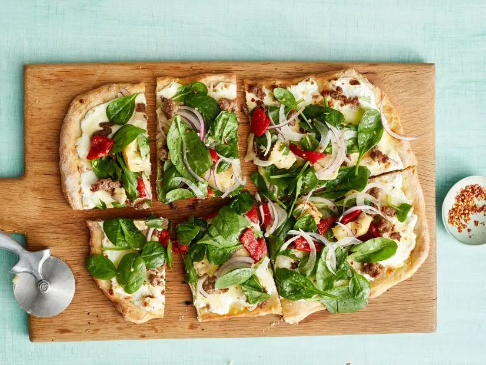
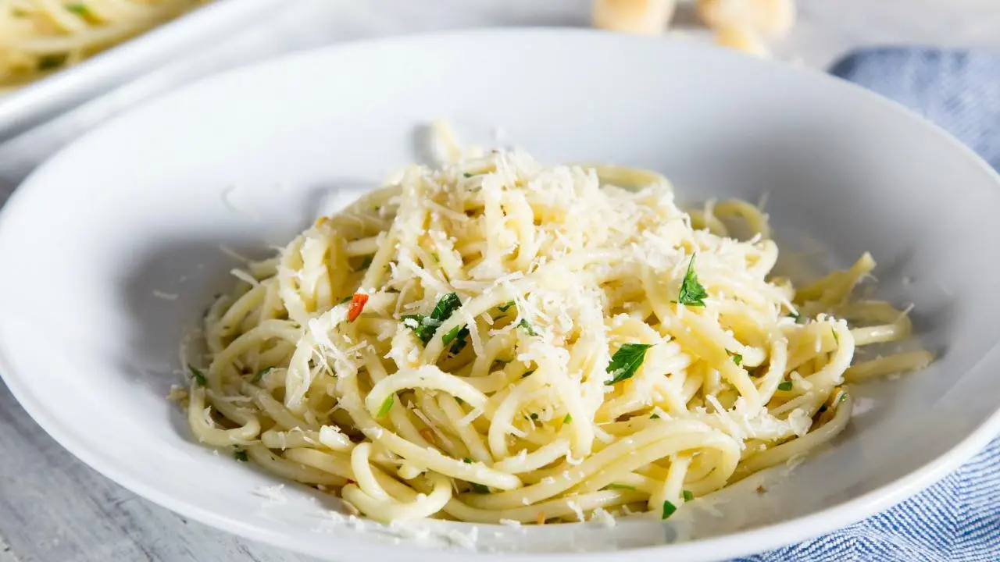

RECIPE COURTEST OF FOOD NETWORK KITCHEN
From: Food Network Magazine
Sausage Pizza With Spinach Salad
Level:Easy Total:50 min
Active:40 min Yields: 6 to 8
Nutrition Info
Ingredients:
-
1 pound pizza dough, at room temperature
-
All-purpose flour, for dusting
-
1 tablespoon extra-virgin olive oil
-
1/2 pound sweet Italian sausage, casings removed
-
3/4 cup whole-milk ricotta cheese
-
1/2 cup shredded mozzarella cheese 1/2 cup shredded provolone
cheese 1/3 cup grated parmesan cheese
-
2 cloves garlic, minced
-
1/4 teaspoon dried oregano
-
1/2 small red onion, thinly sliced
-
4 cups baby spinach (about 21/2 ounces)
-
1 small bulb fennel, trimmed, cored and thinly sliced
-
1/2 cup chopped raosted red peppers
-
3/4 cup quartered marinated artichoke hearts, drained and halved
-
1 tablespoon red wine vinegar
-
Kopsher salt and freshly ground pepper
-
Red pepper flakes, for topping
-
Make the pizza: Place an inverted baking sheet or pizza stone on
the lowest oven rack; preheat to 475 degrees F. Stretch the
pizza dough into an 11-by-15-inch rectangle on a floured piece
of parchment paper; trim any excess paper around the dough.
Transfer the dough (on the parchment) to a pizza peel or another
inverted baking sheet and slide the dough and parchment onto the
hot baking sheet. Bake until browned in spots, 10 to 12 minutes.
-
Meanwhile, heat the olive oil in a medium skillet over
medium-high heat. Add the sausage and cook, breaking it up into
pieces with a wooden spoon, until no longer pink, about
4 minutes.
-
Remove the crust from the oven. Spread the ricotta on top,
leaving a 1-inch border. Sprinkle with the mozzarella, provolone
and parmesan; top with the sausage and garlic. Return the pizza
to the oven and bake until the cheese is bubbling,
8 to 10 minutes. Sprinkle with the oregano.
-
Meanwhile, make the salad: Soak the red onion in ice water for
10 minutes, then drain. Toss the spinach, fennel, roasted red
peppers, artichoke hearts and red onion in a large bowl with the
vinegar and olive oil; season with salt and pepper.
-
Top the pizza with the salad and cut into pieces. Sprinkle with
red pepper flakes.
∇

Spaghetti with Oil and Garlic (Aglio e Olio)
RECIPE COURTEST OF FOOD NETWORK KITCHEN
From: Food Network Magazine
Level:Easy Total:26 min
Active:26 min Yields: 4 to 6
Nutrition Info
Ingredients
-
Kosher salt
-
1 pound spaghetti
-
3 cloves garlic, minced
-
1/2 cup extra-virgin olive oil
-
Pinch red pepper flakes
-
2 tablespoons chopped flat-leaf parsley
-
1/2 lemon, zested, optional
-
Freshly grated Parmigiano-Reggiano, optional
-
Bring a large pot of cold water to a boil over high heat, then
salt it generously. Add the pasta and cook, stirring
occasionally until al dente, tender but not mushy, about
8 minutes.
-
While the pasta cooks, combine the garlic, olive oil, 1 teaspoon
salt and the red pepper flakes in a large skillet and warm over
low heat, stirring occasionally, until the garlic softens and
turns golden, about 8 minutes.
-
Drain the pasta in a colander set in the sink, reserving about
a 1/4 cup of the cooking water. Add the pasta and the reserved
water to the garlic mixture. Mix well. Add the parsley and lemon
zest (if using). Adjust seasoning, to taste. Transfer to a large
serving bowl or divide amongst 4 to 6 dishes. Serve topped with
grated cheese, if desired.
∇

Grilled Steak with Greek Corn Salad
RECIPE COURTEST OF FOOD NETWORK KITCHEN
From: Food Network Magazine
Ingredients
-
3 tablespoons extra-virgin olive oil
-
2 tablespoons red wine vinegar
-
2 tablespoons chopped fresh oregano and/or mint
-
1 teaspoon honey
-
Kosher salt and freshly grouond pepper
-
1 English cucumber, peeled and chopped
-
1 pint grape and cherry tomatoes, halved
-
1 small red onion, diced
-
1/2 cup crumbled feta cheese (about 4 ounces)
-
1/3 cup pitted green olives, sliced
-
2 ears of corn, shucked
-
1 1/4 pounds cube steak
-
Preheat a grill to high. Whisk the olive oil, vinegar, herbs,
honey, 3/4 teaspoon salt and a few grinds of pepper in a medium
bowl. Remove 2 tablespoons of the vinaigrette to a large bowl;
set aside. Add the cucumber, tomatoes, red onion, feta and
olives to the bowl with the remaining vinaigrette; toss to coat.
-
Grill the corn, turning occasionally, until charred in spots,
about 8 minutes; remove to a cutting board. Meanwhile, season
the steaks with salt and pepper. Working in batches if
necessary, grill the steaks until the edges start browning,
about 2 minutes. Flip and cook until browned on the other side,
about 30 seconds. Transfer to the bowl with the reserved
vinaigrette; toss to coat.
-
Cut off the corn kernels and add to the salad. Serve the steak
with the corn salad.
Cook's Note
Cube steak is an inexpensive cut of beef that has been tenderized
by machine. If you can't find it, pound a top round steak with
a meat mallet.